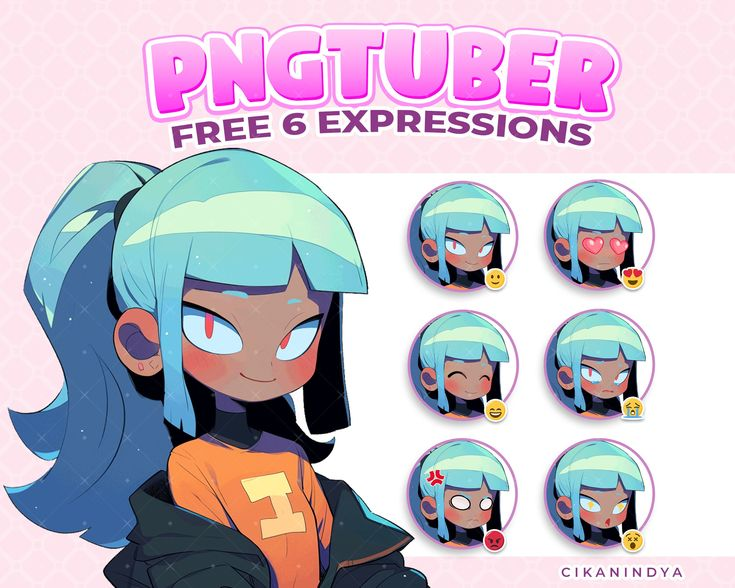
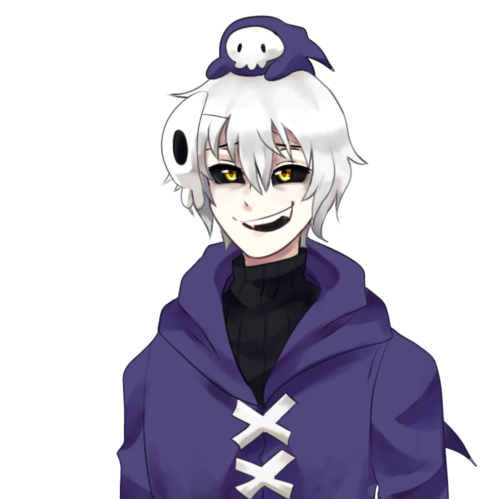
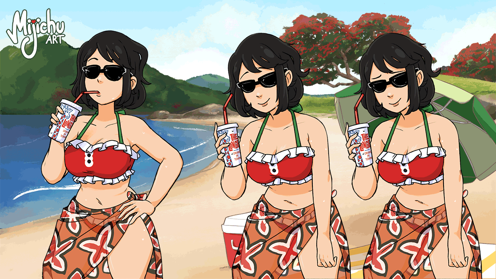

Samuel é um adulto foi aprisionado por seus pais que o fizeram experimentos que deixou em coma. Samuel por um bom tempo foi impedido de ver, por seus olhos serem sensíveis de mais pra que a luz não o machucasse, mas finalmente foi descoberta uma forma de restaurar sua visão, infelizmente o tratamento é caro, Samuel não pensava em desistir, com ajuda do seu tio, que obtém seu guarda, conseguir o quase todo dinheiro que precisava. Infelizmente foi descontado um cancer que o mataria daqui uns meses, agora Samuel estar em um impasse, será bom gastar todo esse dinheiro pra que uma pessoa que já vai morrer possa ver? Será que vale apena ver antes de morra?
A arte ainda esta sendo discutida, o senário do jogo já esta resolvido, mas a arte dos personagens não, eu tenho uma ideia de como eu quero, mas achar artista de acha é de fisio de se achar. A arte seria como dos PNGtubers, simples mas criativa, a arte de anime seria muito caro de se fazer, mesmo que seja mais compatível com o conceito de visual novel, preciso pensar em como fazer sem gastar muito dinheiro. Veja uns exenplos de arte de PNGtuber:
  Sera como um visual novel como todas as outras, tera outras rotas variavas, onde o protagonista vai poder ver ou não, se a rota parte ora ele querendo ver o jogador vai poder escolher escolhe quem o Samuel, protagonista, vai ver primeiro, assim tendo uma rota diferente com reações diferentes do Samuel, mostrando também como a vida dele partiu depois da cirurgia dos olhos, como ele ficando junto com uma personagem.
O protagonista, Samuel Clarabelle, por viver sua vida preso pelos seus pais sofrendo por vários experimentos enquanto estava em coma teve que sempre usar uma venda pra que seus olhos não seja feridos por serem sensíveis. Ele mesmo estando em coma sabe muito bem sobre o mundo a duto, pôs viveu uma vida completa em seu coma, mesmo que tudo fosse estranho, as pessoas nessa vida eram muito diferente das pessoas reais. Essas pessoas era como gatos humanoides ou criaturas inimagináveis, que agiam como nos humanos, e por não poder ver e só ter convivido com esses seris que esteve com ele em quanto ele estava em coma, ele imagina seus conhecidos como esses seris, significa que seu tio que ele mora pra ele é um grande gato humanoide cheio de olhos.